Komputer Windows di browser dan HP Anda.
Nyalakan Windows Server atau Windows 11 di GitHub Codespaces lewat Windows Cloud Lab, hubungkan secara privat dengan Tailscale, lalu buka di browser atau Remote Desktop di HP.
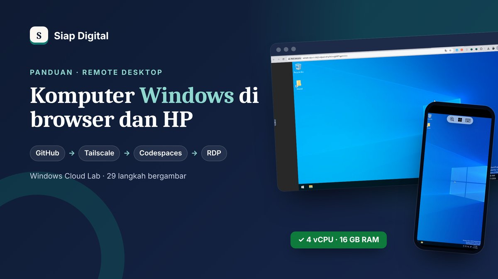
Alur produksi
Empat tahap, semuanya dari browser.
-
01 · Akun
GitHub & Tailscale
Token GitHub, repository, dan auth key Tailscale
-
02 · Mesin
Windows Cloud Lab
Buat komputer Windows di GitHub Codespaces
-
03 · Browser
Konsol web
Buka desktop Windows langsung di browser
-
04 · RDP
Windows App
Sambungkan dari HP atau laptop lewat Tailscale
Yang perlu disiapkan
Siapkan akun berikut sebelum mulai. Pembuatan token GitHub dan auth key Tailscale dijelaskan di tutorial ini.
-
Akun GitHub
Untuk token dan Codespaces. Siapkan satu repository khusus, misalnya repository privat yang kosong.
-
Akun Tailscale
Untuk auth key. Pastikan MagicDNS aktif di tailnet Anda.
-
Aplikasi Tailscale
Pasang di HP atau laptop yang dipakai untuk membuka Windows, lalu login dengan akun yang sama.
-
Windows App (opsional)
Aplikasi Remote Desktop dari Microsoft untuk HP atau laptop. Tanpa aplikasi ini, Windows tetap bisa dibuka lewat konsol web.
-
Browser desktop
Chrome atau Edge. Hindari perangkat bersama karena kredensial disimpan di browser.
Daftar isi
Token, auth key, alamat email, dan nama akun di tangkapan layar sudah kami buramkan.
- Bagian 1Buka Windows Cloud LabLangkah 1–2
- Bagian 2Hubungkan akun GitHubLangkah 3–7
- Bagian 3Pilih repositoryLangkah 8–8
- Bagian 4Sambungkan TailscaleLangkah 9–13
- Bagian 5Simpan kunci pemulihanLangkah 14–15
- Bagian 6Buat komputer WindowsLangkah 16–19
- Bagian 7Buka Windows di browserLangkah 20–20
- Bagian 8Sambungkan lewat Remote Desktop di HPLangkah 21–29
Buka Windows Cloud Lab
Windows Cloud Lab menyalakan Windows Server atau Windows 11 di GitHub Codespaces. Semua pengaturan dilakukan dari dashboard web.
-
Buka situs Windows Cloud Lab
Buka winlab.siapdigital.id, lalu klik Buka Dashboard.
Buka Windows Cloud Lab ↗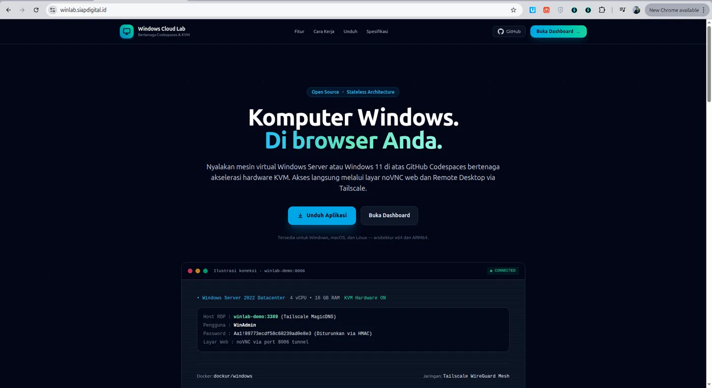
Beranda Windows Cloud Lab -
Mulai wizard Siapkan ruang kerja
Dashboard membuka wizard Siapkan ruang kerja dengan lima tahap: GitHub, Repository, Tailscale, Pemulihan, dan Ringkasan. Tahap pertama meminta GitHub token.
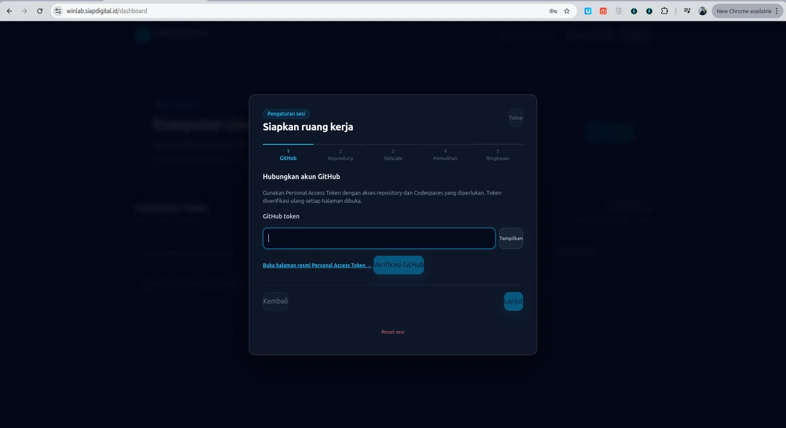
Tahap 1: Hubungkan akun GitHub


Hubungkan akun GitHub
Token classic dengan scope repo dan codespace dipakai untuk membuat dan mengelola Codespace.
-
Buka halaman token GitHub
Klik Buka halaman resmi Personal Access Token. Di GitHub, klik Generate new token, lalu pilih Generate new token (classic).
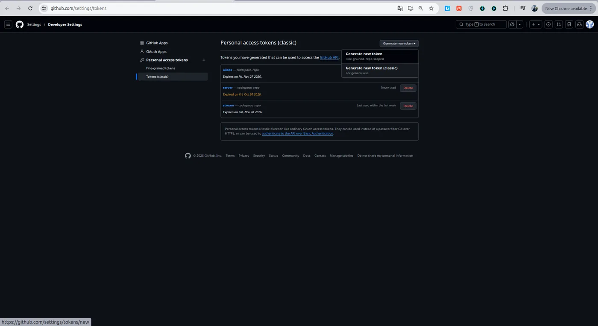
Menu Generate new token (classic) -
Isi nama, masa berlaku, dan scope repo
Isi Note, misalnya
winlab, pilih Expiration, lalu centang repo.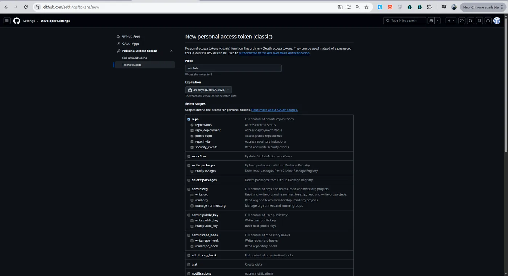
Form token classic dengan scope repo -
Centang codespace, lalu Generate token
Gulir ke bawah, centang codespace, lalu klik Generate token.
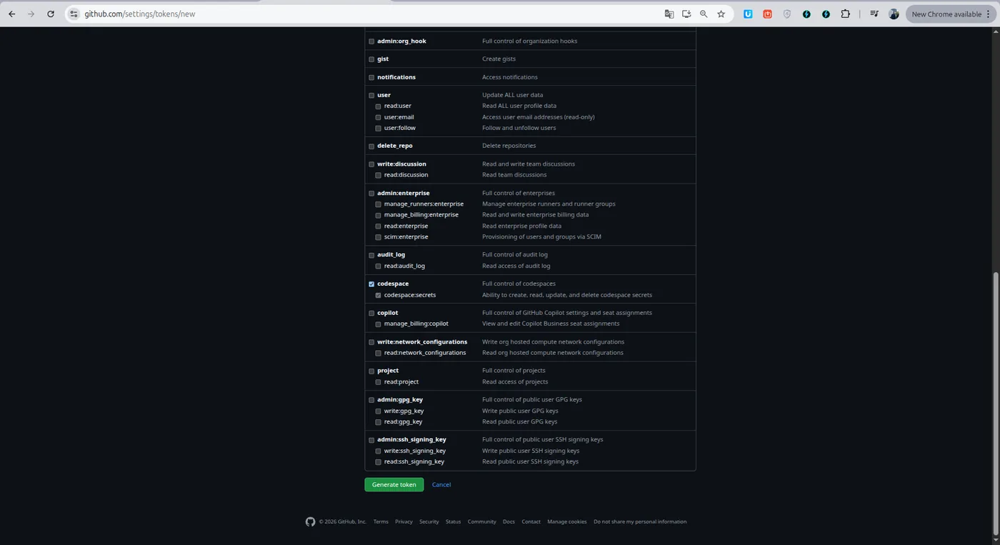
Scope codespace tercentang -
Salin token
Token yang diawali
ghp_hanya tampil sekali. Klik ikon salin di sebelahnya.Perhatian: Token ini sama dengan kata sandi akun GitHub Anda. Jangan kirim ke siapa pun atau tampilkan di screenshot. Jika bocor, klik Delete dan buat token baru.
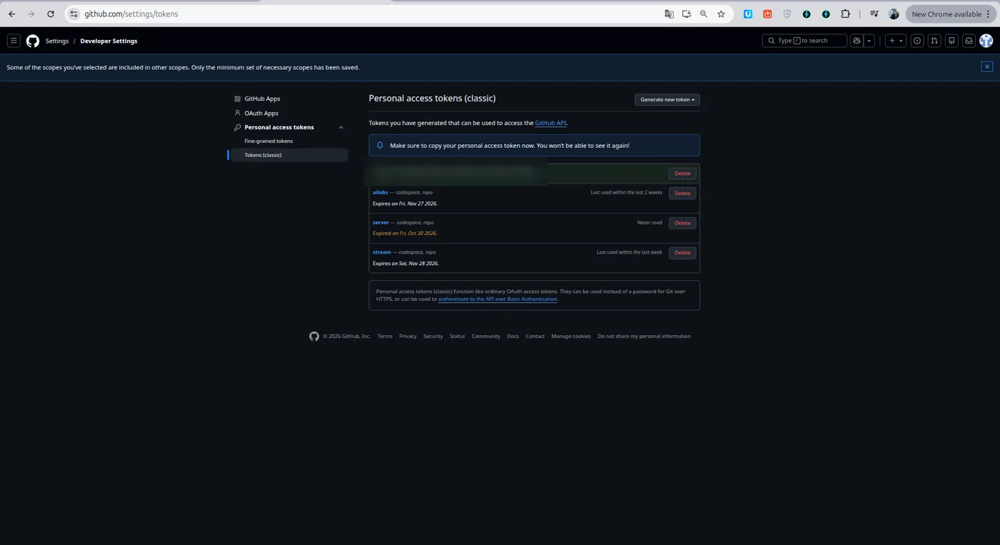
Token baru (diburamkan) -
Tempel dan verifikasi
Kembali ke wizard, tempel token di kolom GitHub token, lalu klik Verifikasi GitHub. Setelah muncul Terverifikasi sebagai dan username Anda, klik Lanjut.
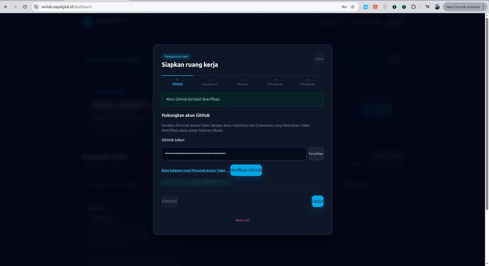
Akun GitHub berhasil diverifikasi


Pilih repository
Codespace dibuat dari salah satu repository Anda.
-
Pilih dan validasi repository
Pilih repository di daftar (klik Muat ulang daftar bila belum muncul), lalu klik Validasi Repository. Pesan Devcontainer belum ditemukan itu normal: file penyiapannya dibuat saat Anda membuat komputer. Klik Lanjut.
Tips: Pakai repository khusus untuk Windows Cloud Lab, misalnya repository privat yang kosong. Saat membuat komputer, aplikasi ini akan menulis folder
.devcontainerke repository tersebut.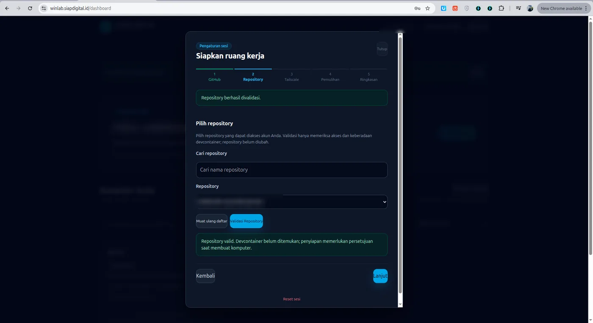
Tahap 2: repository berhasil divalidasi

Sambungkan Tailscale
Tailscale membuat Windows hanya bisa dihubungi dari perangkat di tailnet Anda. Tahap ini memakai auth key.
-
Buka halaman kunci Tailscale
Di tahap Tailscale, klik Buat kunci di halaman resmi Tailscale. Login dulu jika diminta.
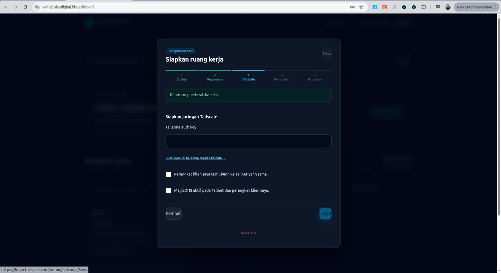
Tahap 3: Siapkan jaringan Tailscale -
Klik Generate auth key
Di halaman Keys, pada bagian Auth keys, klik Generate auth key…
Tips: Yang dibutuhkan di sini adalah auth key (diawali
tskey-auth-), bukan API access token.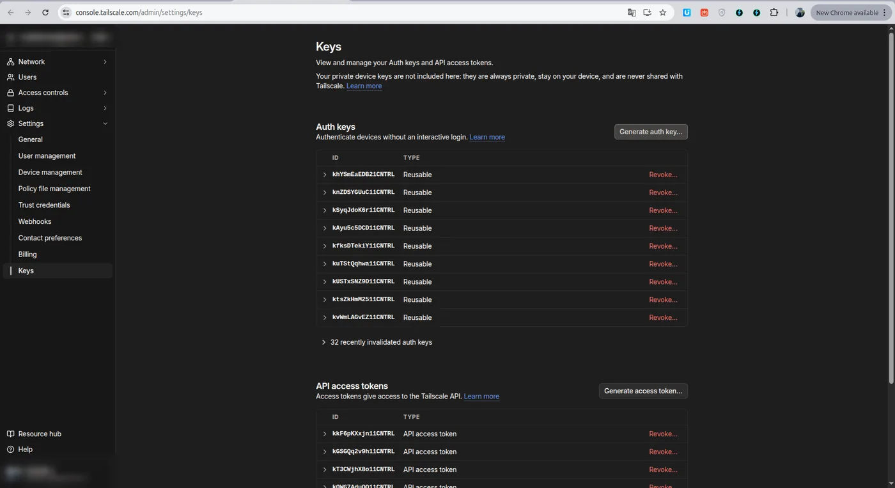
Halaman Keys di konsol Tailscale -
Atur auth key
Isi Description, misalnya
winlab. Aktifkan Reusable agar kunci bisa dipakai lebih dari satu mesin, atur masa berlaku (1–90 hari), lalu klik Generate key.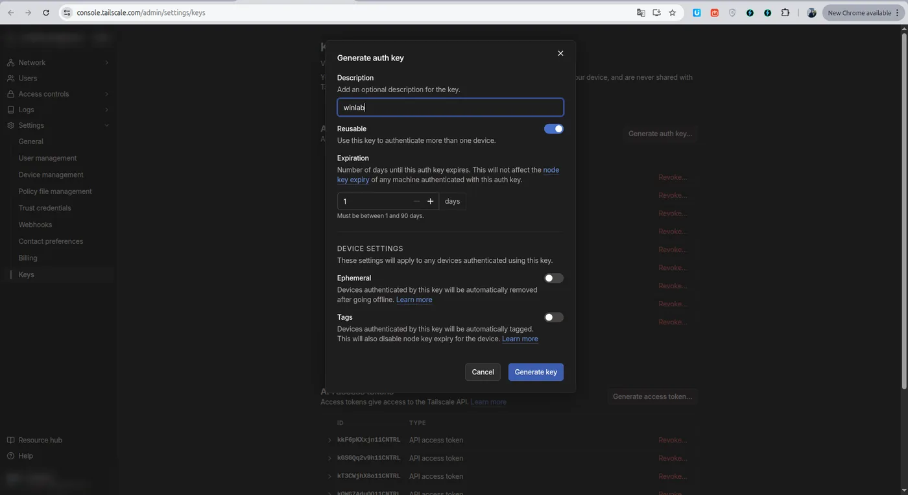
Dialog Generate auth key dengan Reusable aktif -
Salin auth key
Kunci hanya tampil sekali. Klik ikon salin, lalu Done.
Perhatian: Siapa pun yang memegang auth key ini bisa memasukkan perangkat ke tailnet Anda. Jangan bagikan. Jika bocor, klik Revoke di halaman Keys.
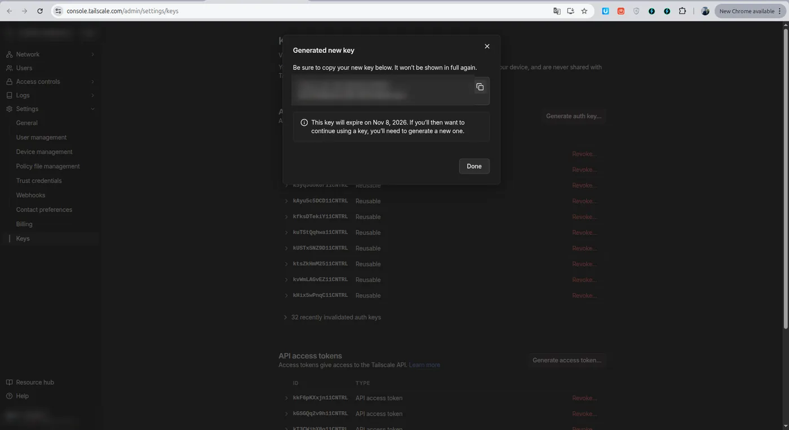
Auth key baru (diburamkan) -
Tempel kunci dan konfirmasi
Tempel auth key di kolom Tailscale auth key. Centang Perangkat klien saya terhubung ke Tailnet yang sama dan MagicDNS aktif pada Tailnet dan perangkat klien saya, lalu klik Lanjut.
Tips: MagicDNS bisa dicek di menu DNS pada konsol Tailscale. Tanpa MagicDNS, nama komputer winlab tidak bisa ditemukan dari HP atau laptop Anda.
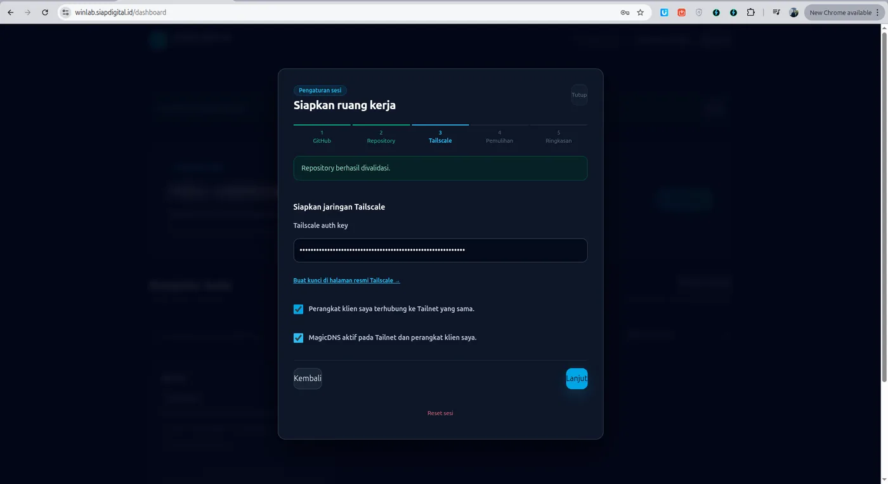
Auth key terisi dan dua konfirmasi dicentang


Simpan kunci pemulihan
Kunci pemulihan (master secret) dipakai untuk menurunkan password Windows. Kunci yang sama menghasilkan password yang sama.
-
Buat dan simpan kunci pemulihan
Klik Buat kunci acak (minimal 32 karakter), lalu Salin kunci dan simpan di tempat aman, misalnya password manager. Centang Saya sudah menyimpan kunci ini, lalu klik Lanjut.
Perhatian: Aplikasi tidak bisa memulihkan kunci yang hilang. Membuat kunci baru tidak mengembalikan password mesin lama.
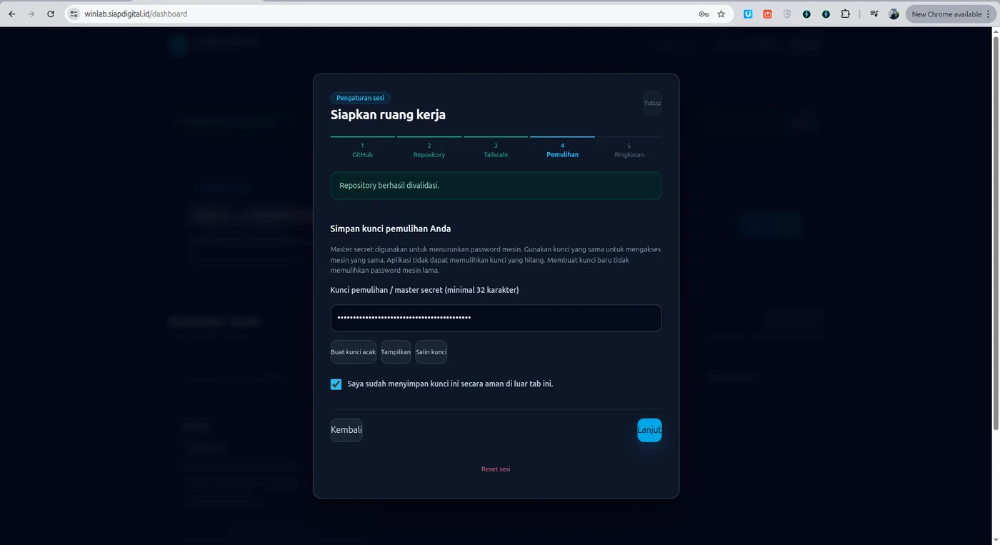
Tahap 4: Simpan kunci pemulihan -
Periksa dan simpan sesi
Tahap Ringkasan menampilkan akun GitHub, repository, serta status jaringan dan pemulihan. Klik Simpan sesi dan selesai.
Tips: Semua kredensial disimpan di browser ini sampai Anda menekan Reset sesi. Jangan gunakan perangkat bersama.
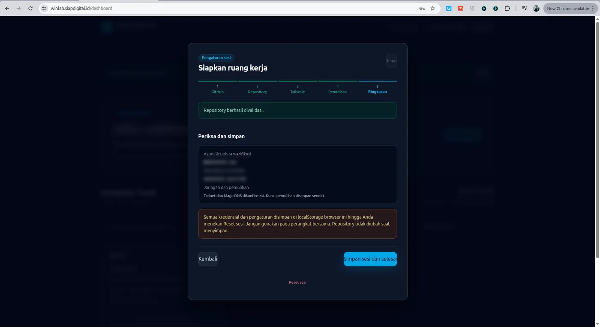
Tahap 5: Ringkasan


Buat komputer Windows
Dashboard membuat Codespace, lalu menyiapkan Windows di dalamnya.
-
Klik Buat Komputer
Dashboard menyapa Anda dan menampilkan daftar Komputer Anda. Klik Buat Komputer.
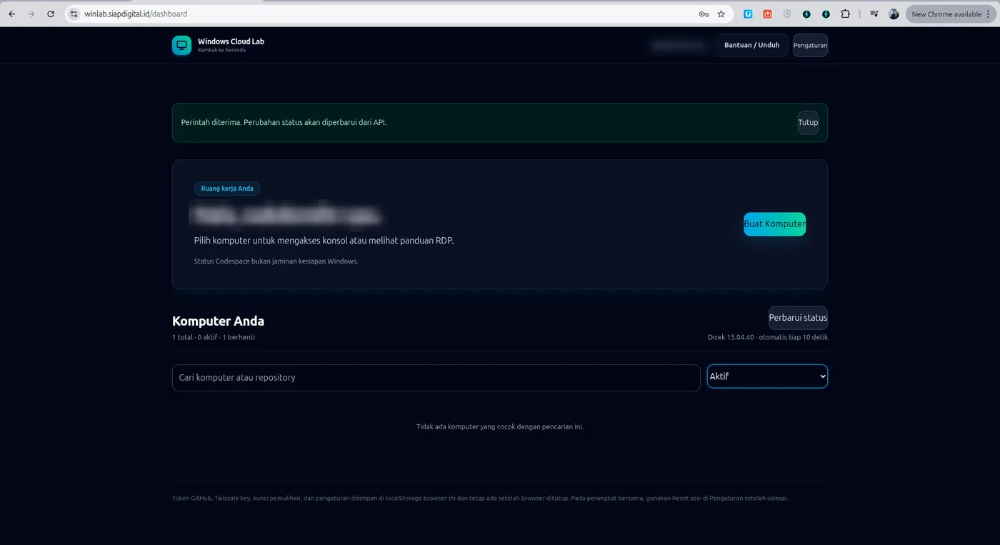
Dashboard Windows Cloud Lab -
Pilih sistem operasi dan kirim permintaan
Isi Nama komputer (opsional), pilih Sistem operasi, misalnya Windows Server 2022, dan periksa spesifikasinya (4 vCPU · 16 GB RAM). Centang dua persetujuan, lalu klik Kirim permintaan.
Perhatian: Pemakaian Codespaces mengurangi kuota dan dapat menimbulkan biaya pada akun GitHub Anda. Matikan komputer bila tidak dipakai.
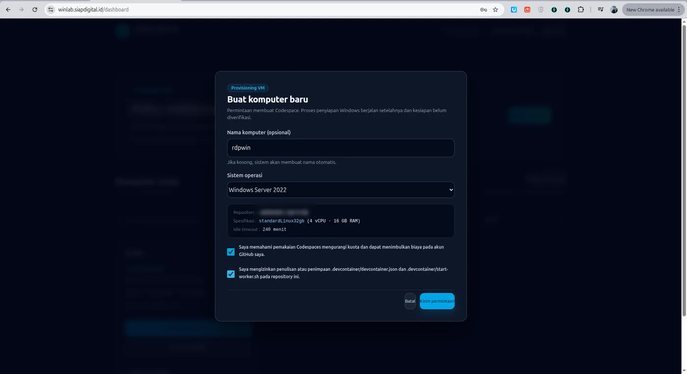
Dialog Buat komputer baru 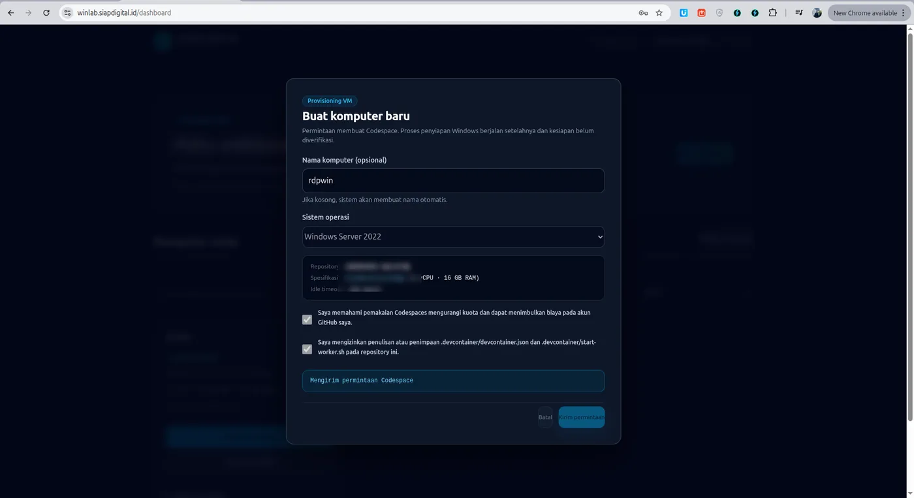
Permintaan Codespace sedang dikirim -
Tunggu proses penyiapan
Kartu komputer menampilkan progres: permintaan diterima, GitHub menyiapkan Codespace dan devcontainer, menunggu Codespace aktif, lalu worker menyiapkan Windows. Penyiapan pertama bisa memakan waktu cukup lama.
Tips: Status Codespace aktif belum berarti Windows siap. Tunggu sampai tombol Buka konsol web aktif.
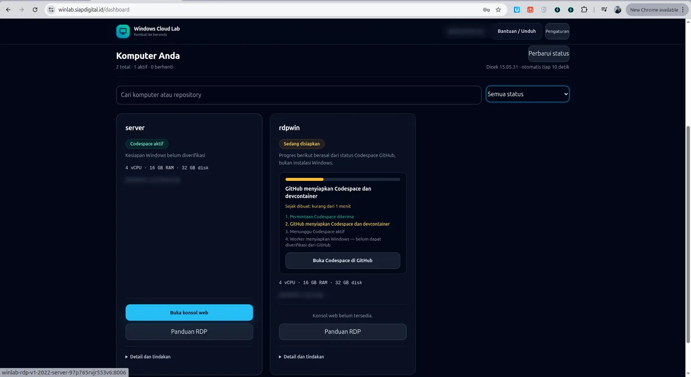
Progres penyiapan komputer rdpwin -
Komputer siap
Setelah siap, kartu komputer menampilkan tombol Buka konsol web dan Panduan RDP.
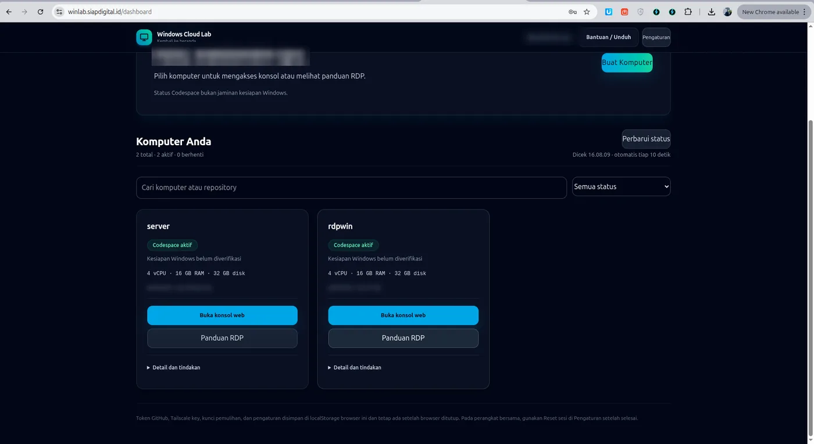
Dua komputer aktif di dashboard


Buka Windows di browser
Cara tercepat: desktop Windows langsung di tab browser lewat noVNC.
-
Klik Buka konsol web
Klik Buka konsol web. Desktop Windows terbuka di tab baru dan bisa langsung dipakai dengan mouse dan keyboard.
Tips: Alamat konsol memakai nama MagicDNS, jadi perangkat ini juga harus terhubung ke Tailscale.
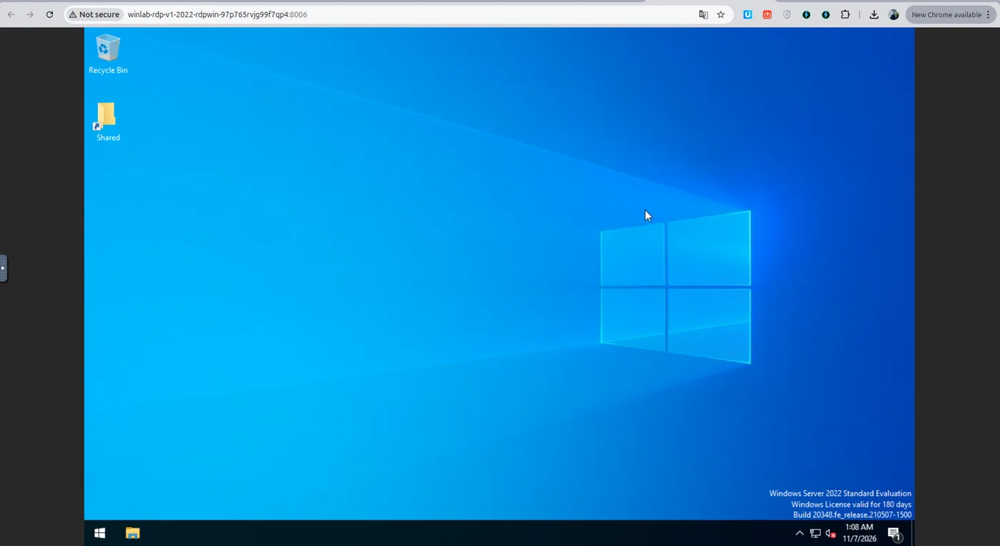
Windows Server 2022 di browser lewat noVNC

Sambungkan lewat Remote Desktop di HP
Untuk tampilan yang lebih lancar, sambungkan dengan aplikasi Remote Desktop. Contoh ini memakai Windows App di iPhone. Langkahnya mirip di Android dan laptop.
-
Buka Panduan RDP
Di kartu komputer, klik Panduan RDP. Catat Hostname RDP (diakhiri
:3389), UsernameWinAdmin, dan Password (klik Tampilkan atau Salin password).Tips: Password diturunkan dari kunci pemulihan. Jika login gagal, pastikan kunci pemulihan di Pengaturan sama dengan saat komputer dibuat.
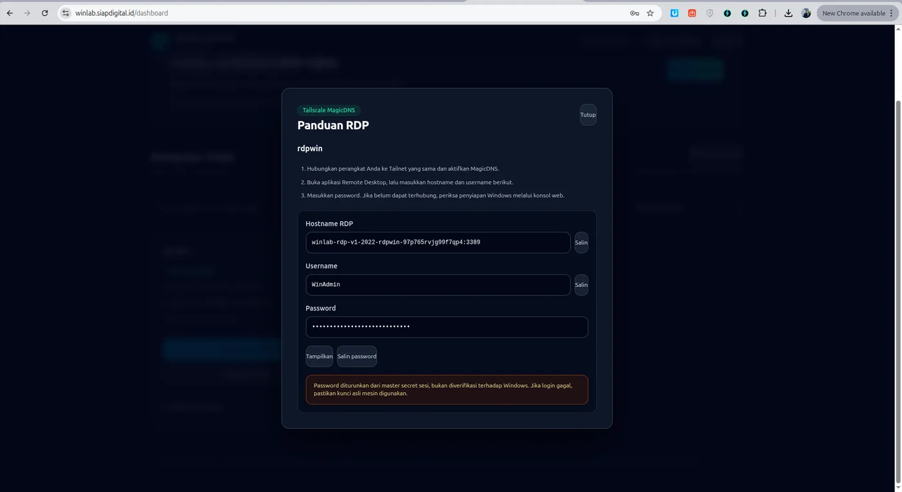
Dialog Panduan RDP -
Sambungkan HP ke Tailscale
Buka aplikasi Tailscale di HP, login dengan akun yang sama, lalu ketuk Connect. Pastikan statusnya Connected dan komputer winlab muncul di daftar perangkat.
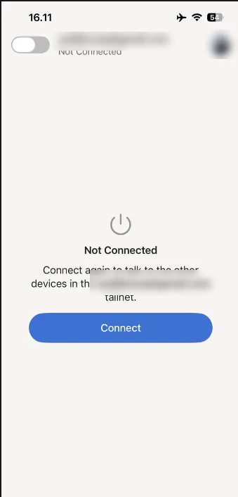
Tailscale belum tersambung 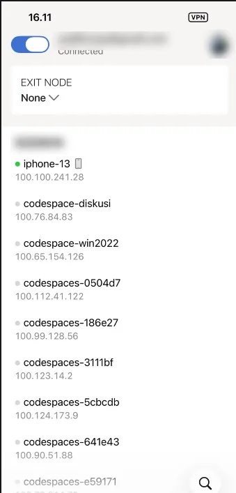
Tailscale tersambung -
Buka Windows App
Buka Windows App dari Microsoft (pasang dulu dari App Store atau Play Store jika belum ada).
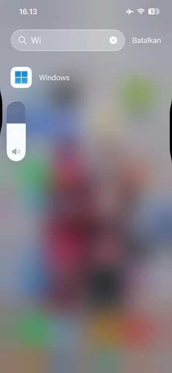
Mencari Windows App di iPhone -
Tambah PC baru
Di halaman Devices, ketuk +, lalu pilih PC.
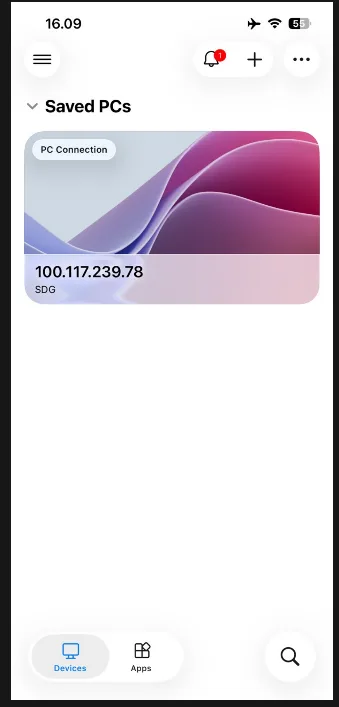
Halaman Saved PCs 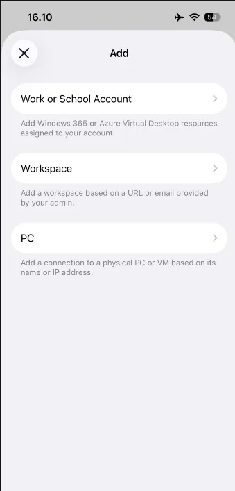
Menu Add, pilih PC -
Isi PC Name dan tambahkan akun
Tempel Hostname RDP di PC Name. Ketuk User Account, lalu Add User Account.
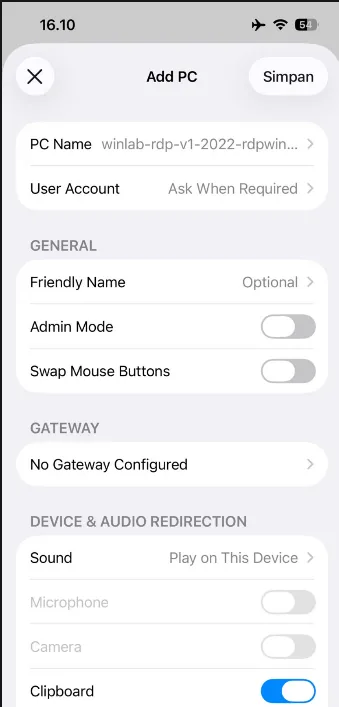
Form Add PC 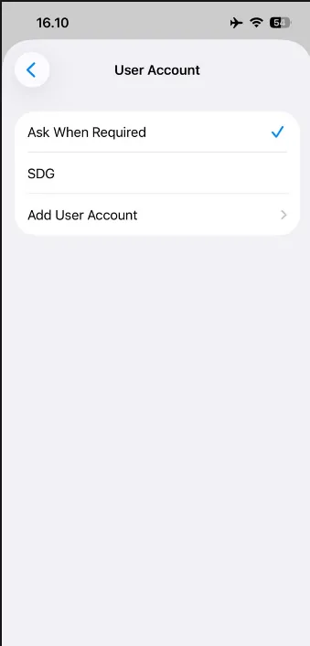
Daftar User Account -
Isi username dan password
Isi
WinAdmindan password dari Panduan RDP, lalu ketuk Simpan.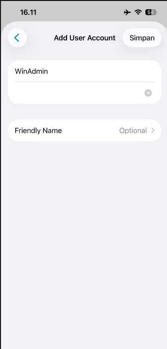
Form Add User Account -
Pilih akun, lalu simpan PC
Pastikan WinAdmin tercentang, kembali ke form, lalu ketuk Simpan.
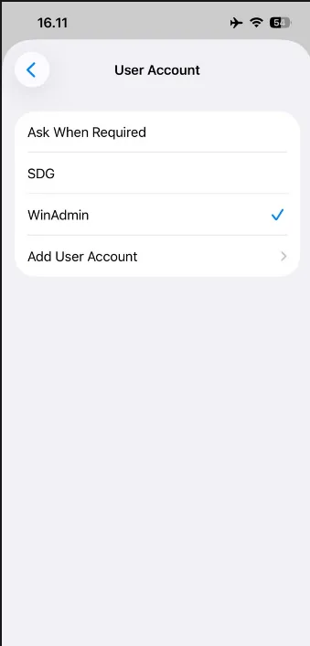
Akun WinAdmin terpilih 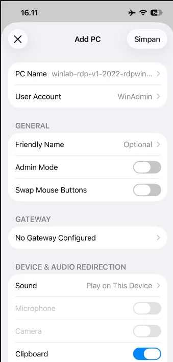
Form Add PC sudah lengkap -
Ketuk PC untuk menyambung
PC baru muncul di Saved PCs. Ketuk untuk mulai menyambung.
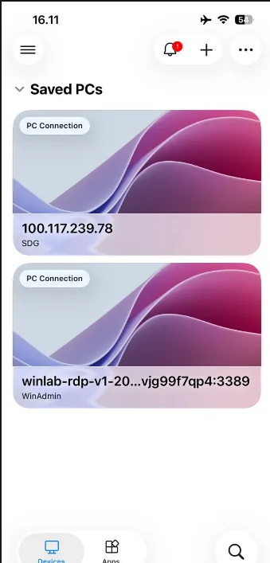
PC winlab tersimpan 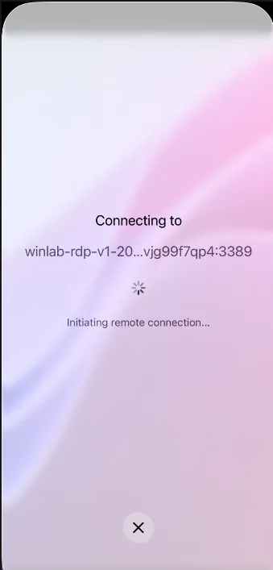
Connecting ke hostname winlab -
Windows siap dipakai dari HP
Desktop Windows tampil di HP. Gunakan ikon kaca pembesar dan keyboard di bagian atas untuk zoom dan mengetik.
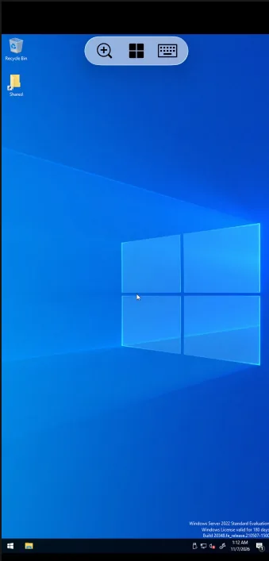
Desktop Windows Server 2022 di Windows App


Tanya jawab
Konsol web atau RDP tidak bisa tersambung.
Pastikan perangkat Anda terhubung ke Tailscale dengan akun yang sama dan MagicDNS aktif. Pastikan juga komputer berstatus aktif dan tombol Buka konsol web sudah tersedia.
Login RDP gagal padahal password sudah disalin.
Password diturunkan dari kunci pemulihan. Jika Anda membuat kunci baru atau memakai browser lain, password ikut berubah. Masukkan kunci pemulihan yang lama di Pengaturan.
Apakah ini benar-benar gratis?
Windows Cloud Lab sendiri gratis dan open source, tetapi mesin berjalan di GitHub Codespaces milik Anda. Pemakaian Codespaces mengurangi kuota akun dan bisa menimbulkan biaya bila melewati kuota. Cek sisa kuota di pengaturan billing GitHub dan matikan komputer bila tidak dipakai.
Versi Windows apa saja yang tersedia?
Menurut situs Windows Cloud Lab: Windows Server 2022 (paling stabil), Windows Server 2019, Windows Server 2025, dan Windows 11. Windows Server di tangkapan layar adalah versi evaluasi.
Bagaimana menghapus semuanya?
Hapus komputer dari dashboard (Detail dan tindakan), klik Reset sesi di Pengaturan, lalu hapus token di GitHub (Delete) dan auth key di Tailscale (Revoke). Folder .devcontainer di repository bisa dihapus manual.
Tampilan tiap layanan bisa berubah sewaktu-waktu. Tangkapan layar diambil pada November 2026.